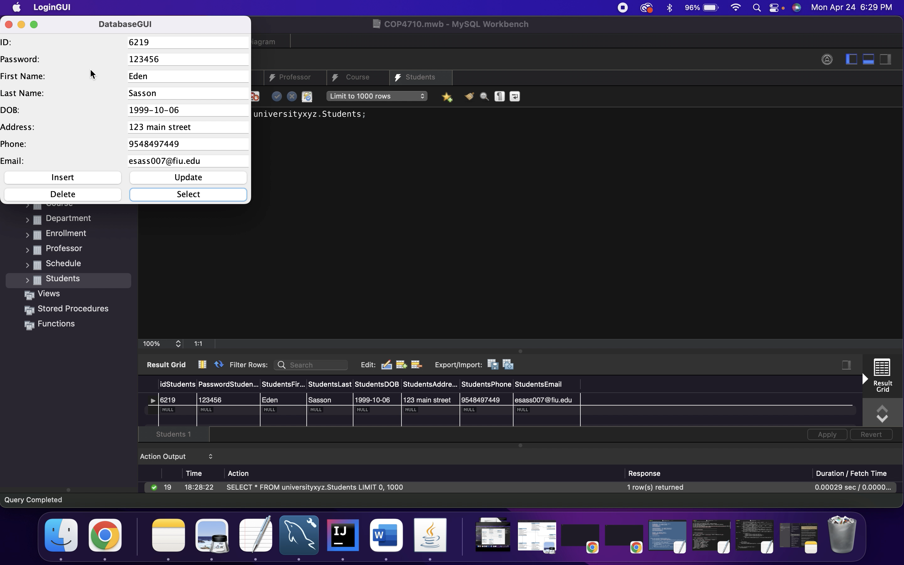

Student Registrations System
Here is a project I worked on to better familiarize myself with MySQL.
This is a database system that will allow students to login, register and manage their information using a simple GUI.
The project uses Structured Query Language in MySQL and Java to connect to the database.
View Project On My Github Page
Technologies:
- - Java
- - MySQL
- - GUI
- - CRUD Operations